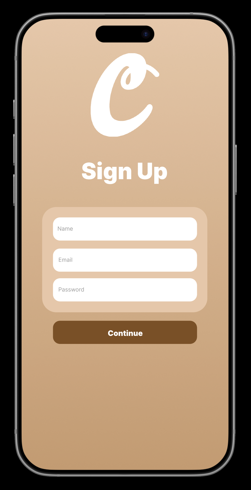
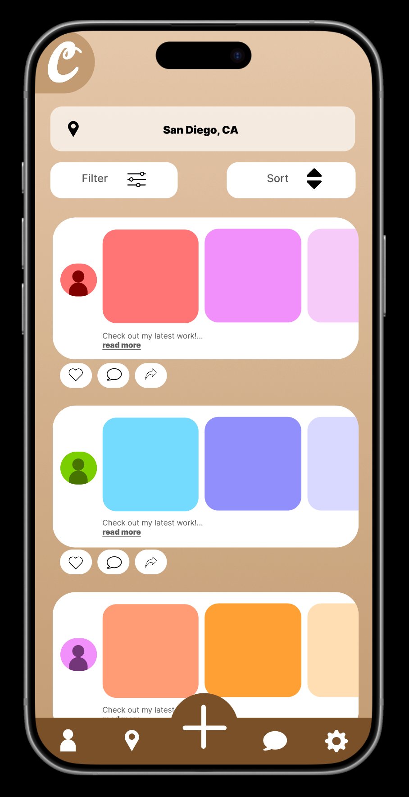
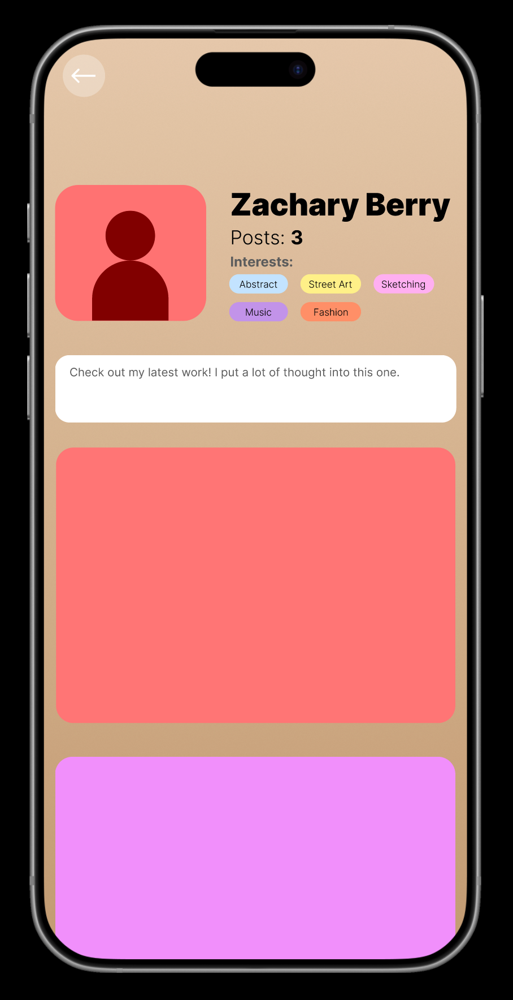
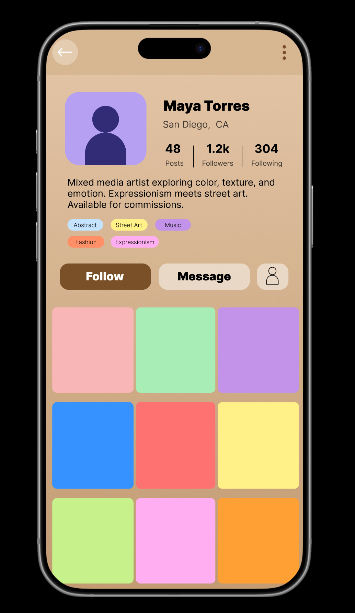
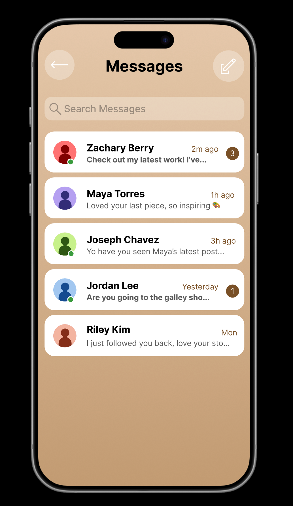
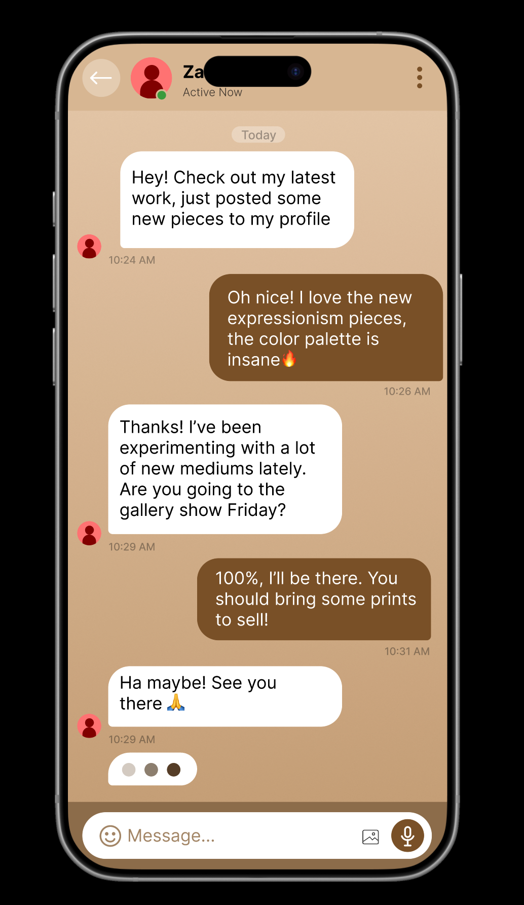
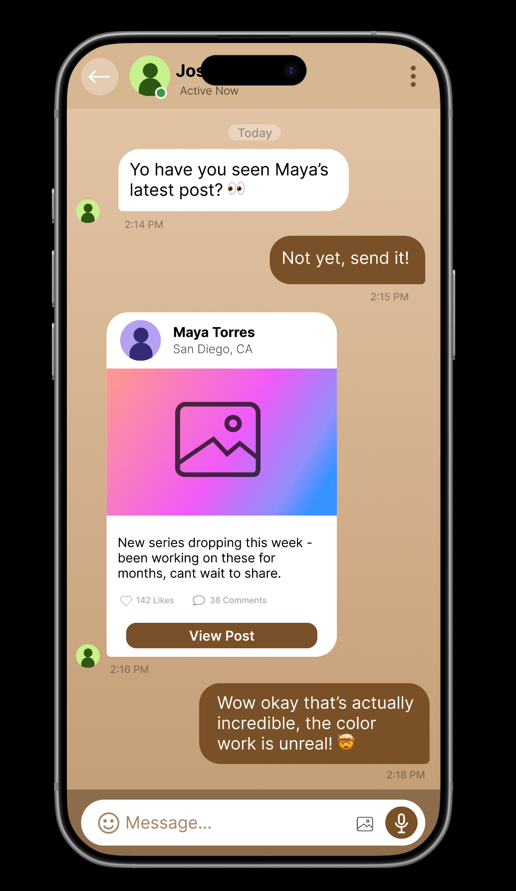

A social app built for makers, not influencers
Carousel is a location-based social platform designed for artists and creatives to share work, discover local talent, and connect with people who share their aesthetic interests.
The project was designed as a solo exploration into what community-driven creative discovery could look like — prioritizing proximity and shared taste over follower counts and algorithmic reach.
Existing platforms reward popularity, not craft
Instagram, TikTok, and similar platforms are built around follower counts and confusing algorithms. For emerging artists, breaking through without an existing audience is nearly impossible.
There was no dedicated space for creatives to organically discover each other based on where they are and what they're actually into.
Artists need a fair playing field — one where their work surfaces to the right people based on shared interest and location, not viral momentum.
Put local discovery and shared interests first
Design a mobile app that surfaces artists to each other based on geography and taste — giving creators a fair, interest-driven feed rather than a follower-driven one.
The target user is an emerging artist, illustrator, or photographer aged 18–35 who is active in their local creative scene but underserved by mainstream platforms. They want to be discovered for their work, not their follower count.
Every choice has a reason
Interest Tags Over Algorithms
Rather than a biased algorithm, Carousel pushes content based on tags users select themselves. Discovery stays transparent and personal.
Location as the Primary Filter
The feed leads with a city location bar rather than a Following tab. Your default experience is your city, not your network.
The Carousel Post Format
Each post supports multiple images in a swipeable carousel — letting artists share a full series without flooding the feed.
Warm, Tactile Visual Identity
The tan and brown palette feels human and grounded — a deliberate choice compared to the high-contrast aesthetic of most social apps.
A complete end-to-end experience
Eight core screens were designed to cover the primary user journeys — from discovery and posting to messaging and profile management.







What I learned along the way
Designing a social app means constantly balancing two competing needs: giving artists enough control to express themselves, while keeping the experience simple enough for casual discovery.
The profile screen went through several iterations — early versions felt too much like a generic social profile. The final direction emerged from leaning into the interest tags as a primary identity signal, letting taste speak louder than follower counts.
Future iterations would include usability testing with local San Diego artists to validate the interest-tag and location-first approach with active users.